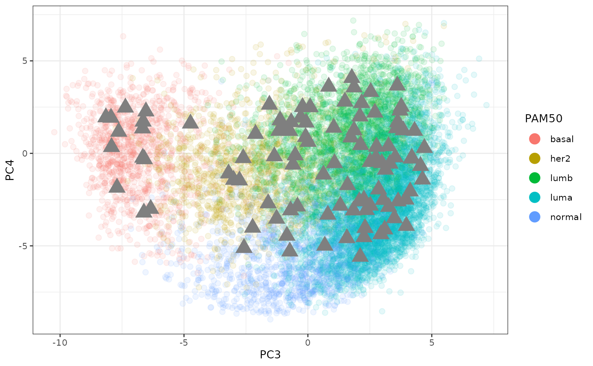
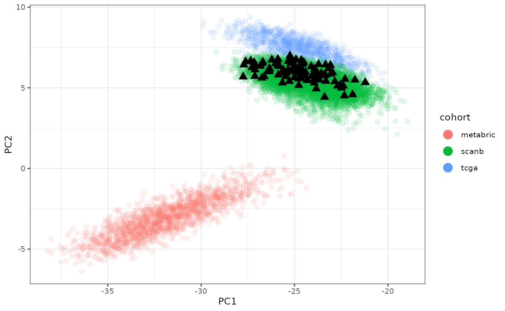
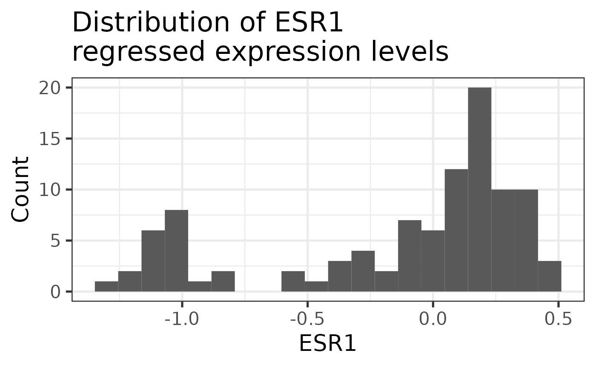
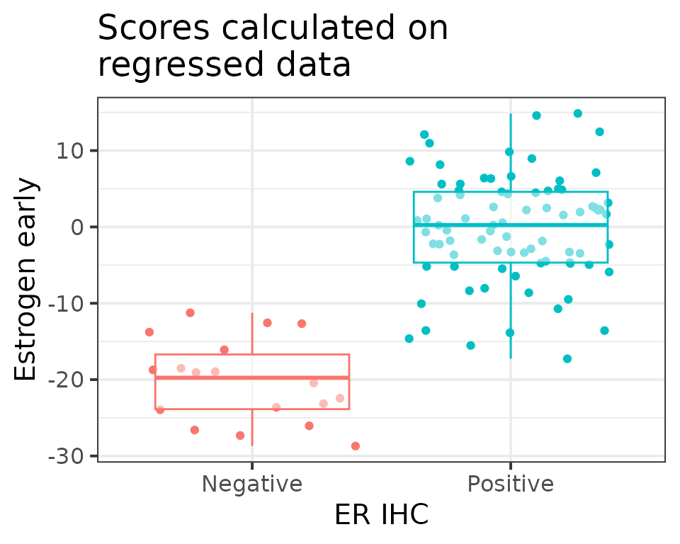

In this tutorial we explain shortly how to use the most important features of ember by analysing a real world dataset, the ABiM 100 dataset1. This is a Swedish cohort of early stage breast cancer with a total of 100 samples. What makes it special is that the consortium did RNA-seq and also sent samples to prosigna to get the PAM50 intrinsic molecular subtype and also the risk of recurrence (ROR).
To install the package run R and the following lines:
if (!require("devtools", quietly = TRUE))
install.packages("devtools")
devtools::install_github("chronchi/ember")Packages for tutorial
In this tutorial we will use several packages besides
ember. These packages should be available after installing
ember.
Get PCA coordinates and plot
The first step of ember is to get the samples embedded
in the common space of all molecular samples. Here we can plot the ABiM
samples on top of all available all samples from TCGA, METABRIC and
SCAN-B as of November 2023. First we need to normalize the data by using
the function get_final_raking_values. The embedding is
obtained by using the “small” version of embedding using the 1044 genes.
The method is robust for missing genes, so if not all 1044 genes are
available you can still use it. Given your dataset the only arguments
one needs to change then is the sum_exp and
assay_to_use arguments. The sum_exp
corresponds to your dataset as a SummarizedExperiment object and the
assay_to_use corresponds to the slot in the
SummarizedExperiment object in which the normalized data is saved. The
package internally uses assay(sum_exp, assay_to_use) to
fetch the data. See the SummarizedExperiment package for more
information on this data type2.
# first calculate the normalization. by default it uses the
# small PCA model
abim_100_normalized <- ember::get_final_ranking_values(
sum_exp = abim_100, assay_to_use = "log2fpkm",
most_variable_genes = "small"
)
#> Total number of stable genes: 44
#> Total number of genes: 1044
#> Number of samples: 100
# calculate the embedding for the abim
abim_100_normalized <- ember::get_pca_coordinates(
abim_100_normalized, which_pca = "small"
)
# get now the base plot so we can overlay the samples into the
# embedding
base_plot <- ember::get_base_plot()
# plot on top of the base plot to have an idea where the samples
p <- base_plot +
ggplot2::geom_point(
colData(abim_100_normalized) %>%
data.frame,
mapping = aes(x = PC3, y = PC4, color = pam50),
size = 5,
alpha = 1,
shape = 17
)The plot below shows how the ABIM samples are in the common space. They are all over the place as expected. We color code by the PAM50 obtained from Prosigna.
p
We can see how close they are to the other cohorts in the space of batch effects.
base_plot_batch <- ember::get_base_plot(
x = "PC1",
y = "PC2",
color = "cohort"
)
# plot on top of the base plot to have an idea where the samples
p_batch <- base_plot_batch +
ggplot2::geom_point(
colData(abim_100_normalized) %>%
data.frame,
mapping = aes(x = PC1, y = PC2),
color = "black",
size = 3,
alpha = 1,
shape = 17
)
p_batch
Makes sense since ABiM is a Swedish cohort that was obtained in a similar way to SCAN-B.
Regress data and calculate scores
In this section we can explain how we can ember to
calculate scores for samples individually by first calculating their
position in a common space with more genes (8253) and then regressing
the batch effects from the first two components. In this way we can
compare scores across different cohorts even.
We now use the two functions get_regressed_data to first
calculate the normalized and regressed dataset containing in the end
8253 genes (if all of them are available) and then followed by
get_scores_regressed to calculate the scores for all the 50
Hallmark pathways from the Molecular Signature Database (MSigDB). The
function get_gene_sets is using the msigdbr
function under the hood to fetch the datasets and prepares the object to
be used by get_scores_regressed.
# we first get the gene sets to calculate the scores
gene_sets <- ember::get_gene_sets(species = "Homo sapiens", category = "H")
abim_100_regressed <- ember::get_regressed_data(
sum_exp = abim_100, assay_to_use = "log2fpkm"
) %>%
# calculate the scores for the regressed data
ember::get_scores_regressed(sum_exp = ., gene_sets = gene_sets)
#> Total number of stable genes: 44
#> Total number of genes: 8253
#> Number of samples: 100
#> [1] "Normalization done."The functions get_regressed_data and
get_scores_regressed return SummarizedExperiment objects,
so you can use the usual functions from the SummarizedExperiment package
to fetch the metadata and the normalized regressed data (saved in the
slot regressed). There are 50 new columns with the names
“regressed_” and the name of the pathway in the metadata.
Moreover, one can also check the regressed gene expression levels by checking the assay “regressed”.
genes_of_interest <- c("ESR1", "TFF1")
SummarizedExperiment::assay(abim_100_regressed, "regressed")[
genes_of_interest,
] %>%
t %>%
data.frame %>%
ggplot2::ggplot(aes(x = ESR1)) +
ggplot2::geom_histogram(bins = 20) +
ggplot2::labs(
y = "Count",
title = "Distribution of ESR1\nregressed expression levels"
) +
ggplot2::theme_bw(base_size = 20)
This is a bimodal distribution as expected. Lower levels are associated with the Estrogen Receptor (ER) negative tumors and high levels with ER+.
Using the regressed scores
We can now compare the different conditions based on the pathway scores obtained previously. As a validation step, we compare the estrogen receptor signaling signature (HALLMARK_ESTROGEN_RESPONSE_EARLY) between ER IHC positive and negative tumors. We expect to see big differences between these two subtypes.
colData(abim_100_regressed) %>%
data.frame %>%
dplyr::filter(!is.na(ER)) %>%
ggplot2::ggplot(aes(
x = ER,
y = regressed_HALLMARK_ESTROGEN_RESPONSE_EARLY,
color = ER
)) +
ggplot2::geom_jitter(show.legend = FALSE) +
ggplot2::geom_boxplot(alpha = 0.5, outlier.shape = NA, show.legend = FALSE) +
ggplot2::labs(
x = "ER IHC",
y = "Estrogen early",
title = "Scores calculated on\nregressed data"
) +
ggplot2::theme_bw(base_size = 15)
We are able to see the distinctions as expected.